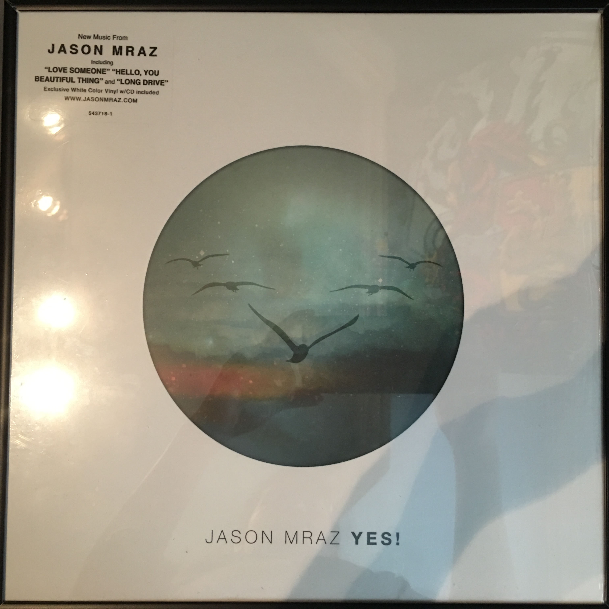
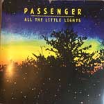

My Collection
Jason Mraz
Yes! - 2014
- Rise
- Love Someone
- Hello, You Beautiful Thing
- Long Drive
- Everywhere
- Best Friend
- Quiet
- Out of my Hands
- It's so hard to say Goodbye to Yesterday
- 3 Things
- You can Rely on Me
- Back To The Earth
- A world Without You
- Shine
Steve Grand
All American Boy - 2015
- Say You Love Me
- Red, White And Blue
- We Are The Night
- All-American Boy
- Soakin' Wet
- Lovin' Again
- Whiskey Crime
- Stay
- Next To Me
- Time
- Better Off
- Run
- Back To California
Thinking Out Loud - Single
Ed Sheeran
- Thinking Out Loud
- I'm A Mess

All The Little Lights
Passenger
- Things That Stop You Dreaming
- Let Her Go
- Staring at the Stars
- All the Little Lights
- The Wrong Direction
- Circles
- Keep on Walking
- Patient Love
- Life's for the Living
- Holes
- Feather on the Clyde
- I Hate
Billy Joel
An Innocent Man
- Easy Money
- An Innocent Man
- The Longest Time
- This Night
- Tell Her About It
- Uptown Girl
- Careless Talk
- Christie Lee
- Leave A Tender Moment Alone
- Keeping The Faith
Munford And Sons
Babel
- Babel
- hispers In The Dark
- I Will Wait
- Holland Road
- Ghosts That We Knew
- Lover Of The Light
- Lovers' Eyes
- Reminder
- Hopeless Wanderer
- Broken Grown
- Below My Feet
- Not With Haste
Original Broadway Cast
West Side Story
- "Prologue"
- "Jet Song"
- "Something's Coming"
- "Dance at the Gym" (Blues, Promenade, and Jump)
- "Maria"
- "America"
- "Tonight"
- "Gee, Officer Krupke"
- "I Feel Pretty"
- "One Hand, One Heart"
- "Quintet"
- "The Rumble"
- "Cool"
- "A Boy Like That / I Have a Love"
- "Somewhere"